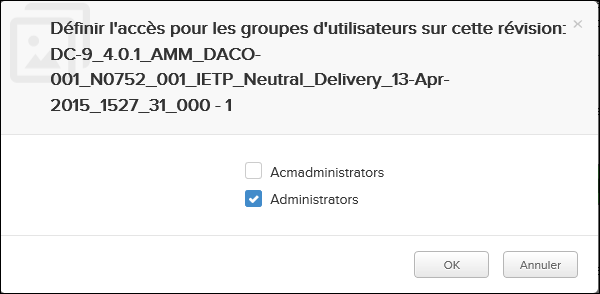

Non applicable pour Pinpoint Standalone Light.
Si
vous avez des autorisations pour le privilège Peut définir des privilèges sur les
révisions dans le Access Control, vous verrez une icône de Gérer la
révision actuelle
dans la Barre d'action lors de l'affichage d'une publication
publiée.
Lorsque vous cliquez sur l'icône de la Gérer la révision
actuelle
, une boîte de dialogue apparaît dans laquelle vous pouvez choisir les groupes
d'utilisateurs qui auront accès à la publication:

Vous décidez quels groupes seront en mesure d'accéder à la publication en cochant la case de
votre choix. Ensuite, vous devez cliquer
OK sur la boîte de dialogue de
confirmation.
Remarque : Seuls les groupes d'utilisateurs de votre organisation peuvent
sélectionner et autoriser l'accès à la publication.
- Les utilisateurs appartenant aux groupes d'utilisateurs sélectionnés auront alors
accès à la publication (autorisation de lecture / écriture / suppression).
- Les utilisateurs appartenant à des groupes d'utilisateurs qui ne sont pas sélectionnés
auront leurs autorisations supprimée.
- Si aucun groupe d'utilisateurs n'est sélectionné en cliquant sur le bouton OK, l'accès
à la révision est supprimé pour tous les groupes d'utilisateurs.
Important : L'utilisateur qui définit l'accès pour les autres groupes
d'utilisateurs dans cette boîte de dialogue doit également appartenir aux groupes auxquels
l'accès doit être accordé. Sinon, les groupes n'apparaîtront pas dans la boîte de
dialogue.
Cette façon d'attribuer l'accès à d'autres utilisateurs serait généralement utile dans un
scénario avec plusieurs organisations ou départements impliqués, par exemple:
Tableau 1. Exemples de privilèges d'accès
| OEM side |
Airline side |
| Groupe d'utilisateurs: OEM Admin |
Groupe d'utilisateurs: Airline Admin |
Groupe d'utilisateurs: Airline Mechanics |
|
Tâche: L'OEM Admin publie une publication dans le groupe Airline Admin en
utilisant la fonctionnalité de publication dans Pinpoint.
|
Tâche: L'Airline Admin obtient les accès à la publication d'OEM Admin. Ensuite,
ce rôle utilise la fonction d'icône Gérer la révision
actuelle pour définir les privilèges pour l'Airline Mechanics afin que
ces utilisateurs puissent voir la publication dans Pinpoint. |
Task: Obtient l'accès pour voir la publication à partir de l'Admin
Airline. |